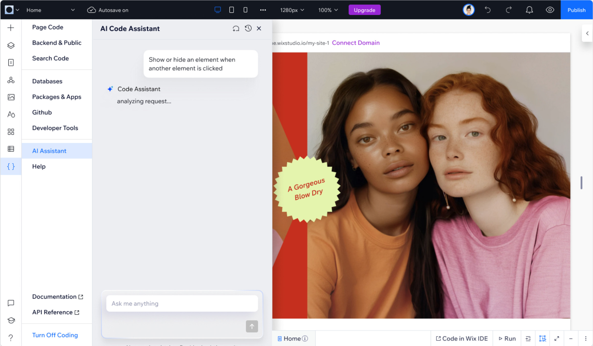

Synthetic data platform for computer vision engineers
- Led and mentored the design team.
- Owned end-to-end UX for the platform.
- Defined product vision with product, engineering, research, marketing and sales.
Walkthrough available on request.
Most recently I led design of the AI Code Assistant in Wix Studio. Before that I led design at Datagen, a computer-vision data platform, and designed cybersecurity workflows at SafeBreach. I use research and product data to decide what to build, and check the result in what people actually do.

An AI assistant that writes code into live client sites. I found the four moments where people lost trust in it and redesigned each one, from where you open it to what happens when code breaks.
Walkthrough available on request.

I’ve worked in product design since 2018, on developer tools, cybersecurity, computer vision and fintech. Before that I spent nine years as a graphic designer and as a Photoshop and Illustrator instructor, and I studied full-stack development and cognitive science, so I’m comfortable in the room with engineers and with the data.
Education: Cognitive Science (UX), University of Haifa · Full-stack Developer Certificate, HackerU · B.A. Visual Communication, Max Stern Yezreel Valley College